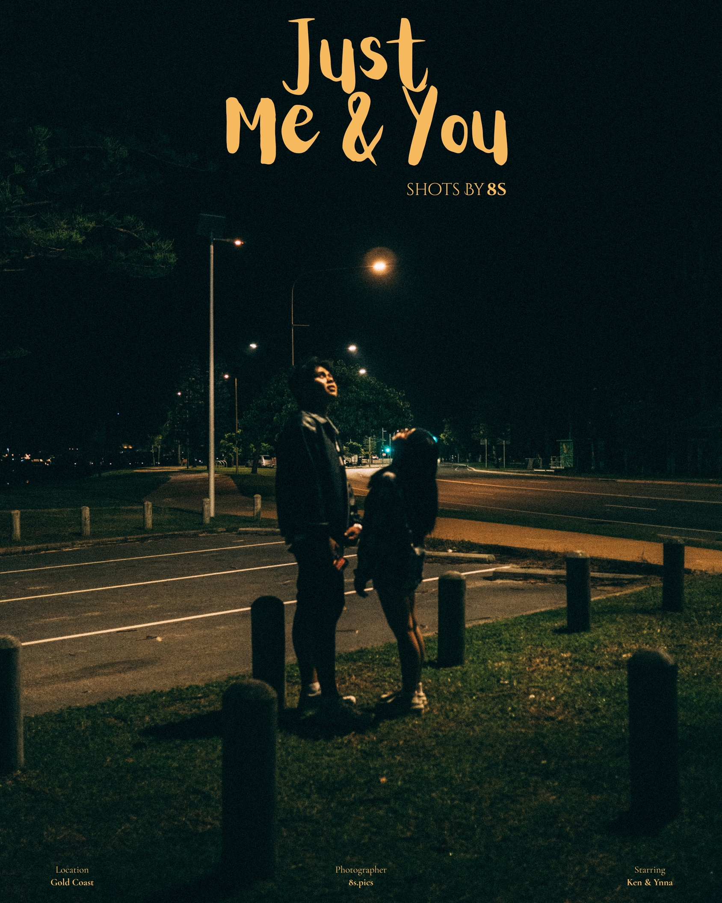
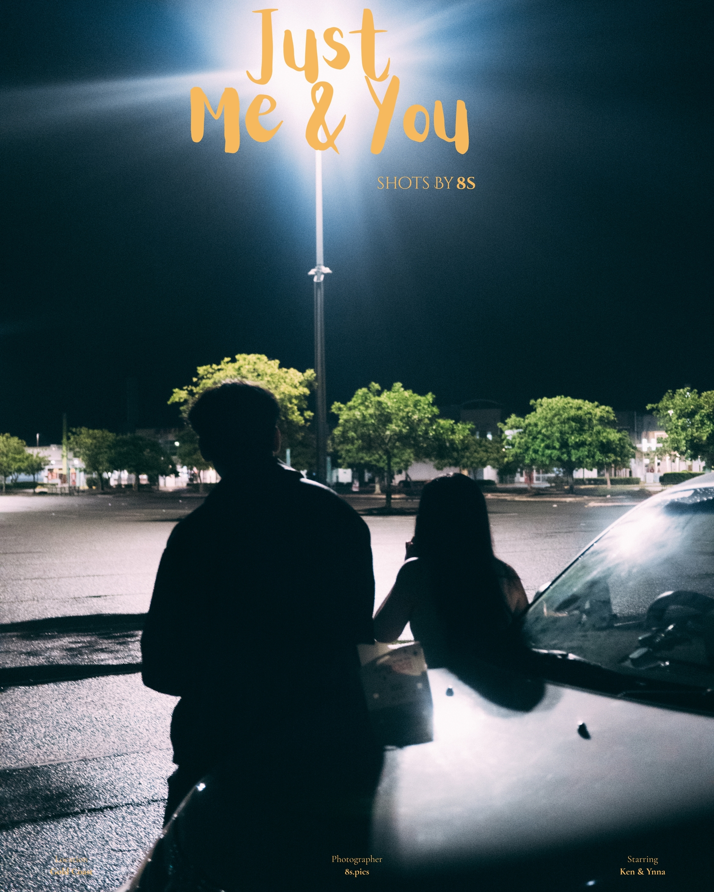
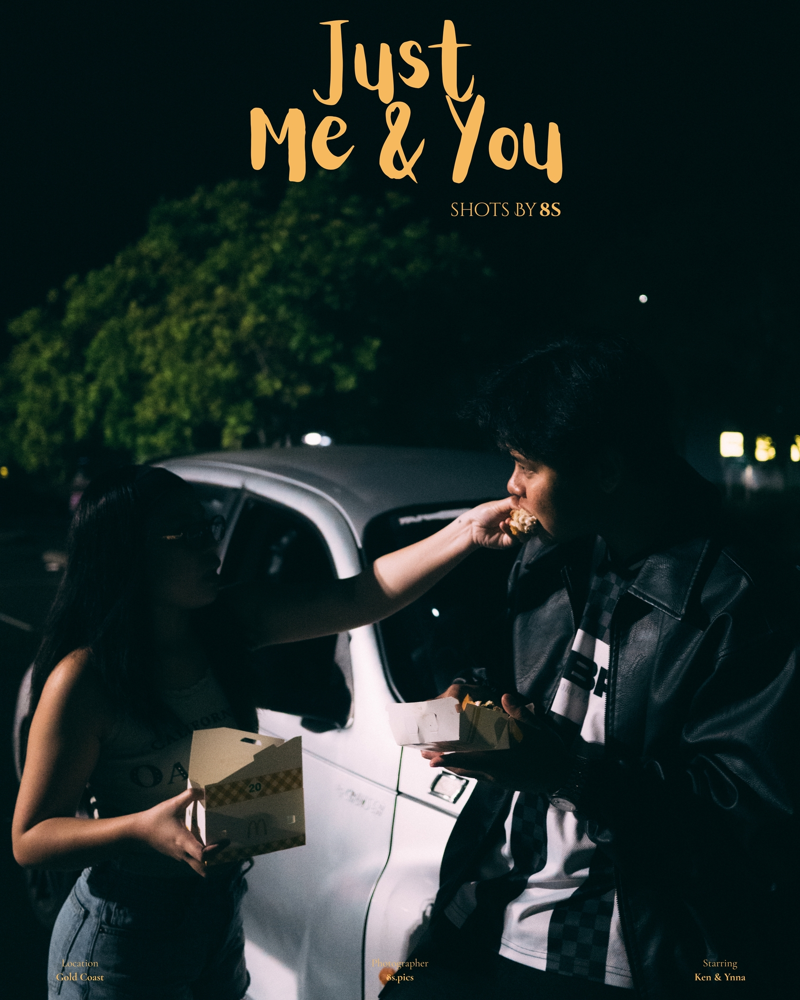
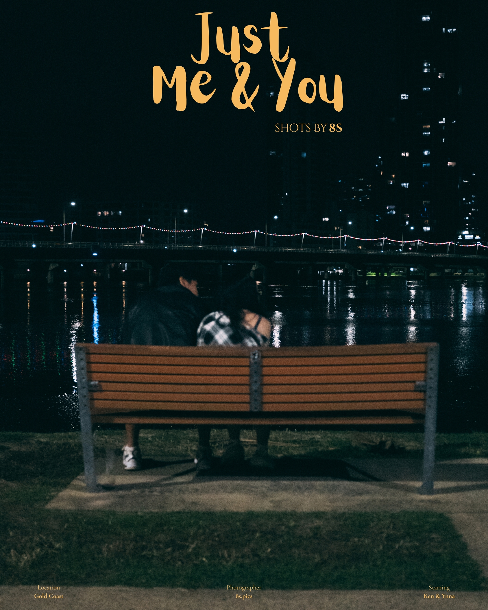
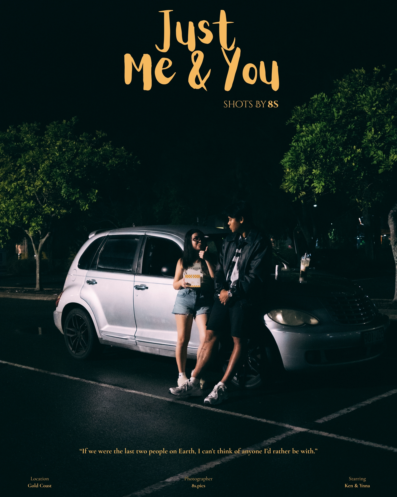

House of Dolls


I still listen, I still look, I wait still.
House of Dolls is a cinematic photography series exploring longing, melancholy, abandonment, and emotional distance.








Photography by 8S.PICS
View Instagram